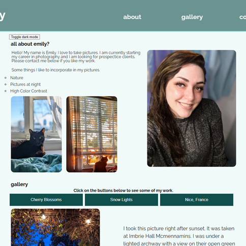
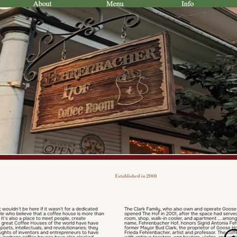
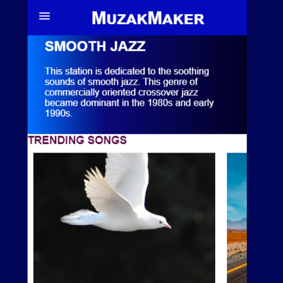
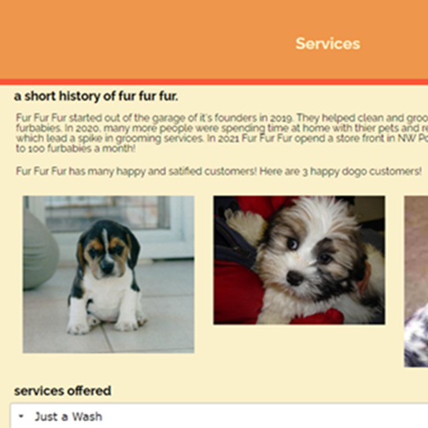
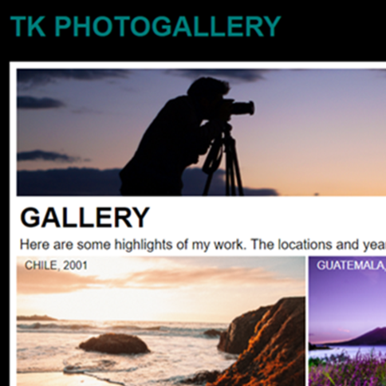

Portfolio
Emily's Photography
This project is a website that highlights photos that were taken by me. It features some JavaScript features such as a gallery selection, dark mode option, a form and a game. The gallery selection will only show the image based on the button that the viewer chooses. The form uses RegExp to validate if the form is filled out properly. The game feature will use a random number generator and compares the number chosen to the number generated if the number matches the user will win.
Fehernbacher Hof
Fehrenbacher Hof is a coffee shop located in the Goose Hollow neighborhood in Portland, OR. This website shows the history of the shop and features viewport resizing, a sticky top menu, jump to top button in the lower left corner, a slideshow powered by JavaScript, a JavaScript plugin accordion menu, an image gallery and social links.
Muzak Maker
Muzak Maker is best viewed as mobile viewing with a collapsible menu powered by CSS. It also has a sliding viewport for more information in each section. Content for this site uses CSS Grid.
fur fur fur
Fur Fur Fur is a dog grooming business and on its website it displays pictures of dogs, has a collapsible menu, a contact form and a slideshow. The images of dogs are powered by JavaScript and uses API. The collapsible menu is a JavaScript plugin called accordion. The contact form collects information and stores the information in LocalStorage. Lastly the slideshow is powered by JavaScript.
TK Photography
The website for TK photography uses CSS Grid for the image layouts. It is a desktop website and also has a contact form made from CSS.